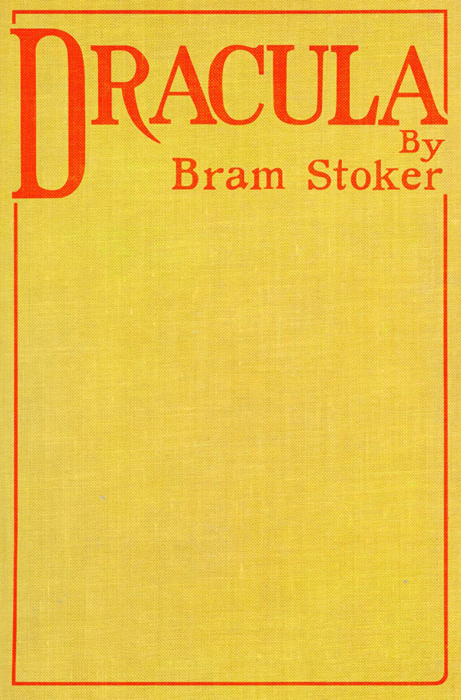

This eBook is for the use of anyone anywhere in the United States and most other parts of the world at no cost and with almost no restrictions whatsoever. You may copy it, give it away or re-use it under the terms of the Project Gutenberg License included with this eBook or online attach www.gutenberg.org. If you are not located in the United States, you will have to check the laws of the country where you are located before using this eBook.
Title: Dracula
Author: Bram Stoker
Release date: October 1, 1995 [eBook #345]
Most recently updated: September 24, 2025
Language: English
Credits: Chuck Greif and the Online Distributed Proofreading Team
Other information and formats: www.gutenberg.org/ebooks/345
